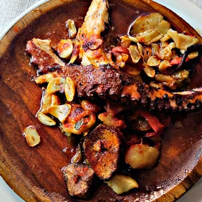
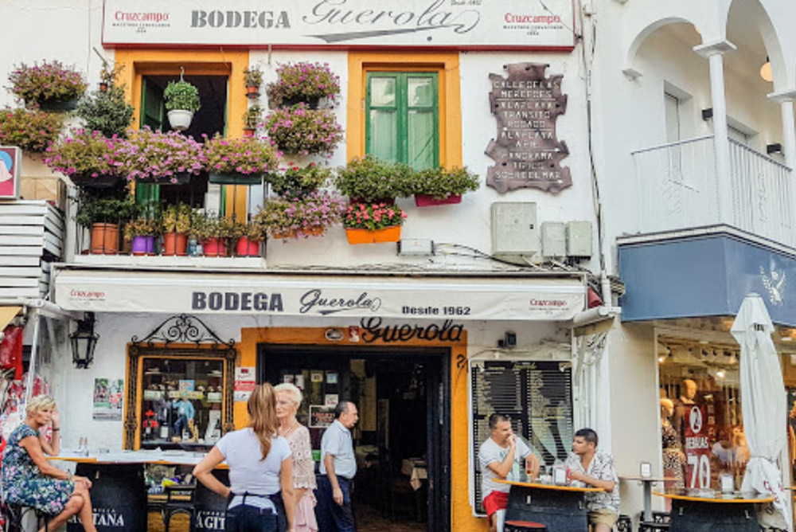
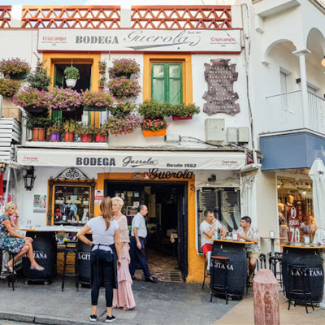
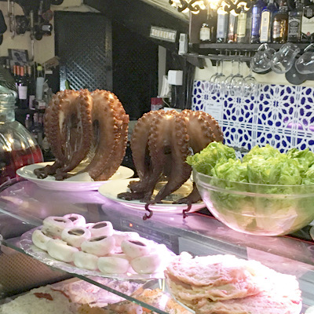
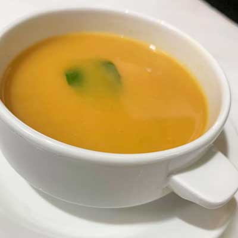

foto: su webphoto: their sitePulpo de la casaHouse octopus
El de la vitrina, como lo sirve la casa.The counter's own, served the house way.
14 € precio de ejemplosample price

Calle de las Mercedes, 2 · Torremolinos
Desde 1962Since 1962
Sesenta y cuatro años de tapas, raciones y cocina mediterránea al final de la calle San Miguel. La misma esquina, la misma casa. Sixty-four years of tapas, raciones and Mediterranean cooking at the end of Calle San Miguel. The same corner, the same house.
Foto: web actual de Bodega GuerolaPhoto: Bodega Guerola's current website
La casaThe house
Desde 1962, tapas, raciones y medias raciones con lo mejor de la gastronomía mediterránea — en un ambiente acogedor con un toque de distinción, como lo cuenta la propia casa. Since 1962, tapas, raciones and half-raciones of the best Mediterranean cooking — in a warm room with a touch of class, as the house itself puts it.
1962
Al final de la calle San Miguel, donde empieza la calle de las Mercedes, la misma bodega lleva sirviendo desde 1962. Los toneles en la puerta, las flores en el balcón y el rótulo de siempre. At the end of Calle San Miguel, where Calle de las Mercedes begins, the same bodega has been pouring since 1962. Barrels at the door, flowers on the balcony, the same sign as always.
Hoy: 4,5 en Google con 1.803 reseñas. Una de las casas más valoradas del centro. Today: 4.5 on Google across 1,803 reviews. One of the most rated houses in the centre.

02
El «Caldito de Pintarroja» de la casa fue nombrado por el diario Málaga Hoy como una de las 20 mejores tapas de la provincia de Málaga. Lo dice su propia web — y lo confirma cualquiera que lo haya probado un mediodía de invierno. The house «Caldito de Pintarroja» was named by the Málaga Hoy newspaper as one of the 20 best tapas in the province of Málaga. Their own website says so — and anyone who has had it on a winter midday will agree.
Málaga Hoy · Top 20 tapas de la provinciaMálaga Hoy · Top 20 tapas of the province03
El pulpo entero sobre el mostrador, la ensaladilla, las coquinas, los azulejos detrás. «Solo hay que ver la vitrina», escriben en las reseñas — y llevan razón. Whole octopus on the counter, the ensaladilla, the coquinas, the blue tiles behind. "Just look at the display," the reviews say — and they're right.
Salmonetes, rosada, conchas finas, boquerones al limón — lo que la casa trabaja, a la vista. Red mullet, rosada, fine clams, lemon anchovies — what the house works with, in plain sight.

04
Aperitivo en la barra, comidas de grupo, cenas con amigos — la casa lo dice así en su propia web, y la cocina no para en todo el servicio. Aperitivo at the bar, group lunches, dinners with friends — the house says it in its own words, and the kitchen doesn't stop through service.
Cerveza de grifo, vino de la tierra y, para rematar, un limoncello. Draught beer, local wine and — to finish — a limoncello.
La cartaThe menu
◆ Carta de muestra — platos citados en su web y en reseñas; precios, los de la casaSample menu — dishes cited on their site and in reviews; prices are the house's
ReseñasReviews
“¡Una experiencia maravillosa! La comida estaba deliciosa. Se nota que cuidan cada detalle y el trato fue impecable.A wonderful experience! The food was delicious. You can tell they mind every detail, and the service was impeccable.
“Sin palabras — solo hay que ver la vitrina. Un lugar estupendo. Vale la pena, y para repetir.Words fail — just look at that counter. A terrific spot. Worth it, and worth repeating.
“Muchas gracias por todo y sobre todo por tu servicio — gente como tú hace mucha falta en la hostelería. Todo buenísimo.Thank you for everything, above all the service — hospitality needs more people like you. Everything was superb.
4,5★ Google · 1.803 4,2★ TripAdvisor · 364 N.º 34 de 612 marisquerías · Restaurant GuruNo. 34 of 612 seafood spots · Restaurant Guru
Demo interactivaInteractive demo
Pedidos para llevarTakeaway ordering
Toca «Añadir» y mira el carrito. Sin pagos reales — una maqueta con precios de ejemplo de cómo funcionaría el pedido online.Tap “Add” and watch the cart. No real payments — a mock-up with sample prices of how online ordering would work.

foto: su webphoto: their siteEl de la vitrina, como lo sirve la casa.The counter's own, served the house way.

foto: su webphoto: their siteLa tapa del top 20 de Málaga Hoy, para llevar en su vaso.The Málaga Hoy top-20 tapa, to go in its cup.
Los que destacan las reseñas. Ilustración — su foto irá aquí.The review favourite. Illustration — your photo goes here.
| Martes a sábadoTuesday to Saturday | 12:00–23:00 |
| Domingo — solo almuerzoSunday — lunch only | 12:00–16:00 |
| LunesMonday | Cerrado — descansamosClosed — rest day |
Horario según su web y su ficha de Google (jul 2026). Cocina sin descanso dentro del servicio.Hours per their website and Google listing (Jul 2026). Kitchen non-stop through service.
Calle de las Mercedes, 2
Al final de la calle San MiguelAt the end of Calle San Miguel
29620 Torremolinos, Málaga
+34 952 38 10 57